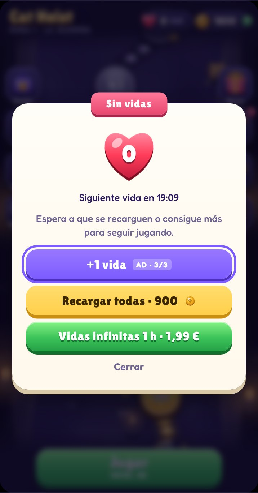
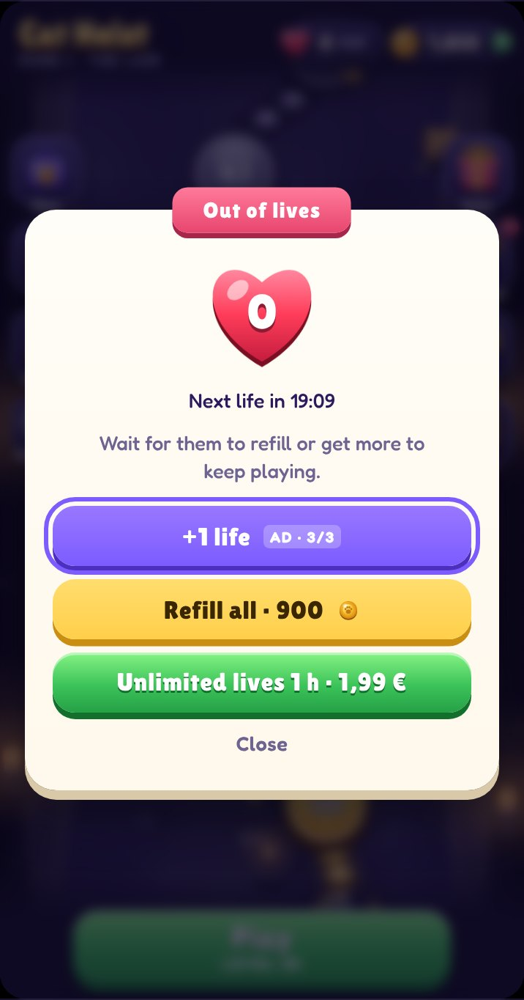

AyudaHelp
Cat Heist es un puzle de gatos ladrones. ¿Algo no va o tienes una idea? Escríbeme y te respondo yo.
Cat Heist is a puzzle about thief cats. Something not working, or have an idea? Write to me and I’ll answer myself.
Escribir a soporteEmail supportcatheist@aleclagarde.com


Cómo se juega
Toca un gato para subirlo a la cinta. Al dar la vuelta al tablero, roba las gemas de su color que tenga a la vista, una por fila.
Si termina la vuelta con gemas pendientes, espera en un hueco. Si se llenan todos los huecos, el dragón se despierta y pierdes.
Un nivel es muy difícil
Los niveles difíciles y muy difíciles están pensados para necesitar varios intentos, pero todos se pueden superar. Mira qué color está a la vista antes de lanzar y no llenes la cinta de golpe. Los potenciadores y la racha de victorias ayudan.
How to play
Tap a cat to put it on the belt. As it goes round the board, it steals the gems of its colour that it can see, one per row.
If it finishes the lap with gems left to steal, it waits in a slot. If every slot fills up, the dragon wakes up and you lose.
A level is really hard
Hard and very hard levels are meant to take a few tries, but every one can be beaten. Check which colour is in view before launching, and don’t fill the belt all at once. Boosters and your win streak help.
Vidas
Tienes 5. Se gasta una al empezar un nivel y la recuperas si ganas. Se recarga una cada 30 minutos.
Si te quedas sin vidas, puedes ver un anuncio para conseguir una más (hasta 3 veces al día), recargarlas todas con monedas o comprar una hora de vidas infinitas.
No me llegan los avisos
Revisa que estén activados en Ajustes de Cat Heist y en los ajustes del móvil (Notificaciones → Cat Heist).
Lives
You have 5. One is used when you start a level and you get it back if you win. One refills every 30 minutes.
If you run out, you can watch an ad for an extra one (up to 3 times a day), refill them all with coins or buy an hour of unlimited lives.
I’m not getting notifications
Check they’re on in Cat Heist’s Settings and in your phone settings (Notifications → Cat Heist).


Compras y progreso
He cambiado de móvil o he borrado la app
La partida se guarda solo en el móvil, así que el progreso no se puede recuperar. Sin anuncios sí se recupera con Ajustes → Restaurar compras.
He comprado algo y no me ha llegado
Cierra y vuelve a abrir la app. Si sigue sin aparecer, escríbeme con el número de pedido que te envió Apple o Google.
¿Cómo pido un reembolso?
Los gestiona la tienda: en iPhone, desde reportaproblem.apple.com; en Android, desde tu historial de pedidos de Google Play.
¿Qué datos se guardan?
Tu partida no sale del móvil. Todo lo demás está en la política de privacidad, con el detalle de cada proveedor.
Purchases and progress
I changed phones or deleted the app
Your game is saved only on the phone, so progress can’t be recovered. No Ads can be recovered with Settings → Restore purchases.
I bought something and didn’t get it
Close and reopen the app. If it still doesn’t show up, email me with the order number Apple or Google sent you.
How do I get a refund?
The store handles refunds: on iPhone at reportaproblem.apple.com; on Android from your Google Play order history.
What data is stored?
Your game never leaves the phone. Everything else is in the privacy policy, with the details for each provider.